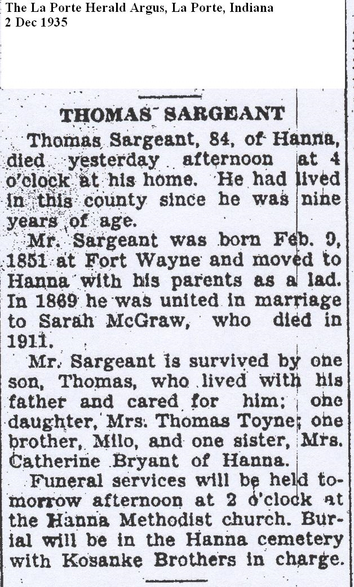
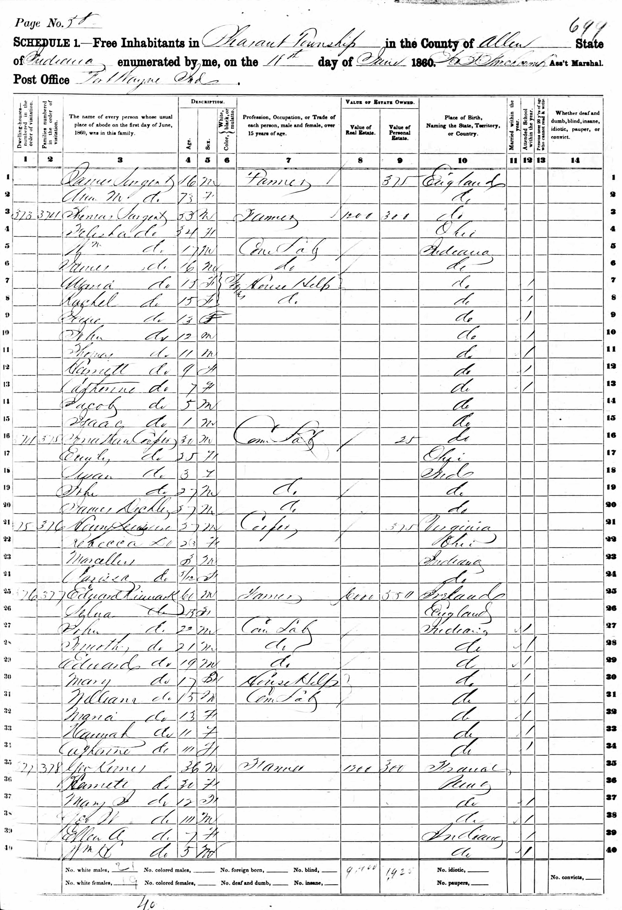
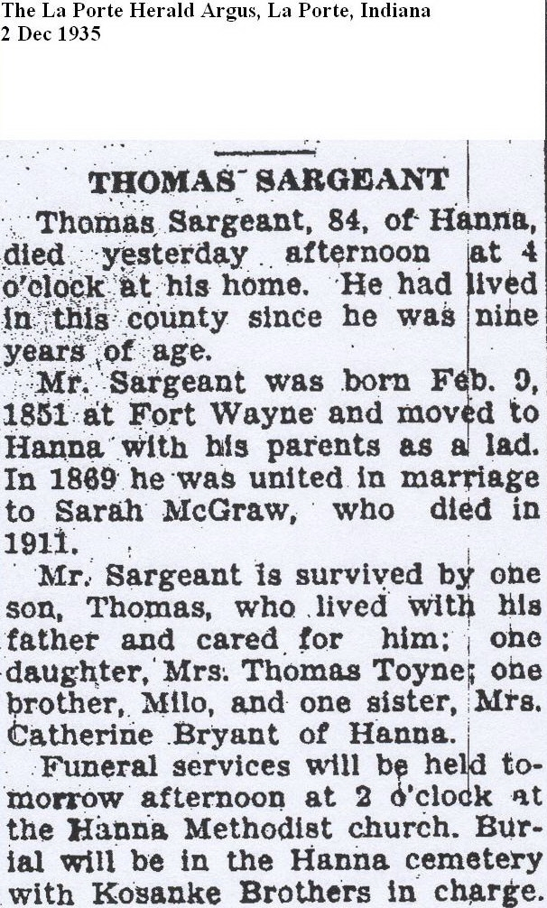

Thomas Sargeant 1851 - 1935
[ Home ] | [ Calendar ] | [ Surnames Index ] | [ Family History ]The 2nd of 8 children of Thomas Sergeant and Telitha CranceThomas Sargeant, the second cousin four-times-removed on the mother's side of Nigel Horne, was born in Fort Wayne, Allen, Indiana, USA on Feb 9, 18511 and married Sarah McGraw (with whom he had 2 children: Sarah and Thomas Nelson) in La Porte, LaPorte, Indiana, USA on Sep 4, 1869.
Throughout his life, Thomas lived in several places: in Allen, Indiana, USA in 1860; in Cass, La Porte, Indiana on Jun 1, 18703; in La Porte, Indiana, USA on Jun 7, 19004; and in Hanna, Indiana on Apr 29, 1910, in 19302 and on Apr 1, 19301 following the death of his wife on Jan 10, 1911 which is where he died on Dec 1, 1935. He was buried there at Hanna Cemetery after Dec 1, 1935.
Parents
- Thomas was born in 1808
- Telitha was born in 1823
Children
- Sarah was born in 1872
- Thomas Nelson was born on Nov 24, 1880
Citations
- US Census 1930 - Findmypast (was age 79 and the head of the household)
- US Census 1900 - Findmypast
- US Census 1870 - Findmypast (was age 20)
- US Census 1900 - Findmypast (was the head of the household)
Media
Thomas Sargeant

1900 US Census

1910 US Census

1860 US Census

La Porte Herald Argus - 2 Dec 1935

1880 US Census Transcription - USC-1880-1000118073100
1930 US Census Transcription - USC-1930-004950620-00536-031
US Census 1900 - USC/1900/004118635/00267/025
1910 US Census Transcription - USC-1910-004971221-00395-000
Us Census 1870 - USC-1870-004263406-00010-019
Family Tree

Generated by ged2site. Last updated on Nov 13, 2024